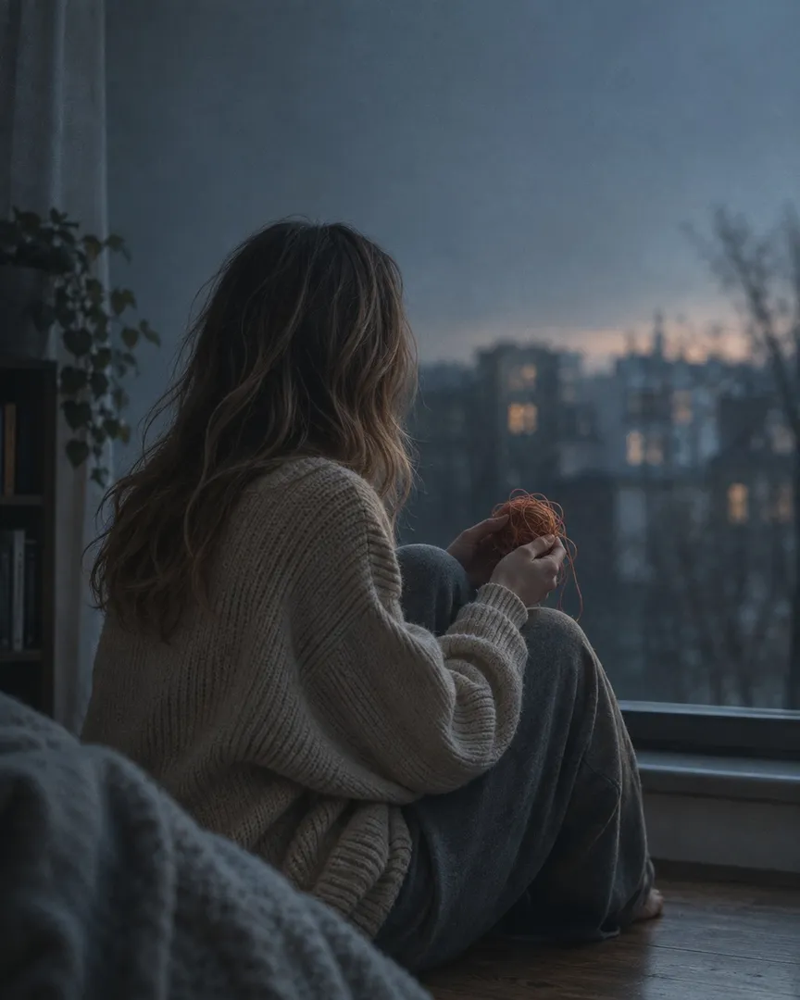

Blog
Mesiace zbierala odvahu: príbeh o úzkostiach z detstva a ceste k pokoju

Koľko mesiacov dokážete nosiť bolesť len preto, že sa bojíte o nej prehovoriť?
Poznáte ten pocit, keď v sebe nosíte niečo tak ťažké, že sa bojíte čo i len nadýchnuť, ak by ste o tom mali hovoriť? Mnohí z nás to dobre poznáme. Bolesť odkladáme, zatláčame a dúfame, že raz sama zmizne.
Mesiace zbierala odvahu
Presne tak ku mne prišla mladá žena, ktorá sa na stretnutie chystala celé mesiace. Odporučila ma jej bývalá klientka, no paralyzoval ju strach.
Strach z toho, že bude musieť znova otvárať staré rany. Že bude musieť nahlas hovoriť o veciach, ktoré tak veľmi boleli. Trápili ju úzkosti, o ktorých nikomu nepovedala.
U mňa nemusíte hodiny rozprávať o svojej bolesti
Tu chcem niečo zdôrazniť. Na stretnutí so mnou nemusíte svoj príbeh podrobne vykladať ani sa znova a znova vracať k tomu, čo bolelo.
Vďaka dátam z informačného poľa a systému TimeWaver vidím súvislosti a mapu toho, čo sa v systéme človeka deje, skôr než mi stihne všetko vyrozprávať. Klientka prišla, usadila sa a začali sme jemne rozmotávať klbko.
Detstvo v tieni alkoholu
Postupne vyplávalo na povrch to najhlbšie pozadie. Detstvo v tieni maminkinho boja s alkoholom. Malé dievčatko, ktoré sa muselo pozerať na niečo, na čo sa detské oči pozerať nemajú.
Maminka už dnes nie je medzi živými, no strach zostal. Zostal otec, brat a v jej hlave neúnavná, vyčerpávajúca starostlivosť a obava o nich.
Spomienky z detstva jej nedali spať. V dospelosti sa premenili na nevysvetliteľné úzkosti, ktoré ju držali pod krkom.
Dve hodiny, ktoré zmenili roky strachu
Keď človek konečne pocíti hlboké bezpečie, prestane bojovať.
V bezpečnom priestore sme sa spolu vrátili o niekoľko rokov späť a prešli situácie, keď maminka pila. Klientka mohla konečne uvoľniť to, čo v sebe roky dusila. Odpustila, prepustila a dovolila si nechať minulosť tam, kam patrí.
Stačilo jedno jediné, približne dvojhodinové stretnutie. Úzkosti, ktoré ju mesiace paralyzovali, boli zrazu preč. Telo konečne pochopilo, že už nemusí byť neustále v pozore.
Kvantový pohľad: telo si pamätá
Keď sa na minulosť pozrieme cez optiku informačného poľa, zistíme, že naše telo si pamätá každú slzu malého dieťaťa.
Kým je táto spomienka aktívna v našej frekvencii, telo sa správa tak, akoby sa to dialo práve teraz. Stačí však správny impulz a ochota nechať to odplynúť. Minulosť potom stratí svoju moc.
Prvý krok je najdôležitejší
Nemusíte roky chodiť v kruhu a donekonečna rozoberať to, čo bolelo. Niekedy stačí len odvaha urobiť prvý krok a vstúpiť do bezpečného priestoru.
Trápia vás nevysvetliteľné úzkosti alebo staré rany z detstva, ktoré vás držia pod krkom? Možno je čas na skutočnú úľavu.
Ak ste sa v jej príbehu spoznali, napíšte mi. Nemusíte hneď všetko vysvetľovať, stačí jedna veta. Viac o tom, ako pracujem s informáciami a energiou, nájdete na stránke TimeWaver Pro.
Príbeh je uverejnený so súhlasom klientky a detaily sú upravené tak, aby nebolo možné identifikovať konkrétne osoby.
Uvedené informácie majú informatívny charakter a nenahrádzajú odbornú lekársku ani psychologickú starostlivosť, diagnostiku či liečbu. Ponúkané služby sú doplnkovou podporou pohody a vnútornej rovnováhy, nie zdravotným výkonom, a nie sú prísľubom vyliečenia ani konkrétneho výsledku. Pri zdravotných alebo psychických ťažkostiach sa vždy obráťte na svojho lekára a bez jeho vedomia nemeňte, nevysádzajte ani neodkladajte predpísanú liečbu.
Objednať konzultáciu